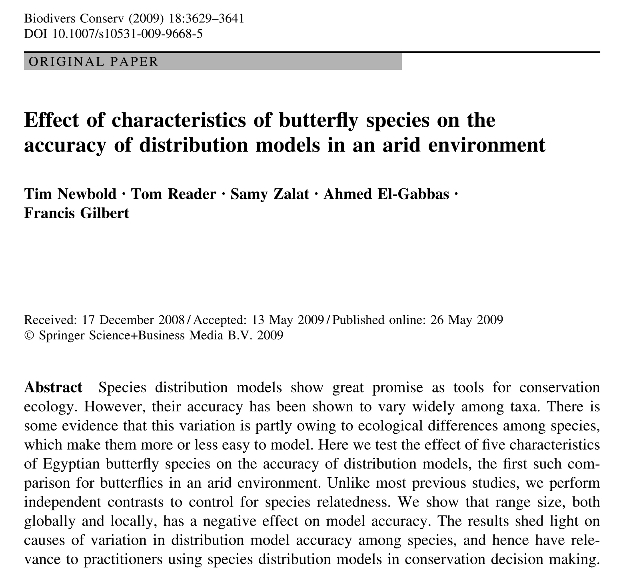

Tim Newbold; Tom Reader; Samy Zalat; Ahmed El-Gabbas, Francis Gilbert (2009). Effect of characteristics of butterfly species on the accuracy of distribution models in an arid environment. Biodiversity & Conservation 18: 3629-41.
Abstract:
Species distribution models show great promise as tools for conservation ecology. However, their accuracy has been shown to vary widely among taxa. There is some evidence that this variation is partly owing to ecological differences among
species, which make them more or less easy to model. Here we test the effect of five characteristics of Egyptian butterfly species on the accuracy of distribution models, the first such comparison for butterflies in an arid environment. Unlike
most previous studies, we perform independent contrasts to control for species relatedness. We show that range size, both globally and locally, has a negative effect on model accuracy. The results shed light on causes of variation in distribution
model accuracy among species, and hence have relevance to practitioners using species distribution models in conservation decision making.
|

|
Download PDF

|
Tim Newbold, Tom Reader, Samy Zalat, Ahmed El-Gabbas & Francis Gilbert 2009
Effect of characteristics of butterfly species on the accuracy of distribution models in an arid environment
Biodiversity & Conservation 18: 3629-41.
10.1007/s10531-009-9668-5
Species distribution models show great promise as tools for conservation ecology. However, their accuracy has been shown to vary widely among taxa. There is some evidence that this variation is partly owing to ecological differences among species,
which make them more or less easy to model. Here we test the effect of five characteristics of Egyptian butterfly species on the accuracy of distribution models, the first such comparison for butterflies in an arid environment. Unlike most
previous studies, we perform independent contrasts to control for species relatedness. We show that range size, both globally and locally, has a negative effect on model accuracy. The results shed light on causes of variation in distribution model
accuracy among species, and hence have relevance to practitioners using species distribution models in conservation decision making.
Species distribution models have great potential to aid conservation efforts, allowing ecologists to predict species distributions over a large area, using incomplete data on species occurrence combined with maps of environmental variables,
describing climate, habitat and topography (Wintle et al. 2005). Many studies have compared the accuracy of predictions made by different modelling techniques, often finding that many techniques perform similarly well (Elith et al. 2006; Hernandez
et al. 2006; Phillips et al. 2006). In fact, there may be more variation in model accuracy among species than among modelling techniques (Berg et al. 2004; Elith et al. 2006). As a result, whether the characteristics of species affect the accuracy
of distribution models is a question that is receiving increasing attention in the literature.
The breadth of a species’s niche has often been considered when trying to explain differences in model accuracy among species. Studies have found that species with narrow, well-defined niches are better modelled than those with broader niches
(Boone and Krohn 1999; Pearce et al. 2001; Kadmon et al. 2003; Berg et al. 2004) and that models for specialist species are generally more accurate than models for generalists (Hepinstall et al. 2002; Segurado and Araújo 2004; Elith et al. 2006).
Species with narrow niches generally have better-defined climate and habitat requirements, which are easier to model (Kadmon et al. 2003). Other studies have shown that the breadth of a species’ niche relative to the environmental conditions found
in the study area as a whole influences model accuracy more than the breadth of a species’ niche per se (Seoane et al. 2005; Hernandez et al. 2006). More marginal species (those that have niches furthest from the average conditions of the study
area) have also been shown to be modelled more accurately than less marginal species, probably for similar reasons (Luoto et al. 2005; Seoane et al. 2005; Carrascal et al. 2006; Hernandez et al. 2006). We might expect therefore that the accuracy
of species distribution models will decrease with increasing niche breadth or habitat tolerance.
Models for species that have narrow distributions in geographical space have also been found to be more accurate than models for species with larger distributions (Stockwell and Peterson 2002; Brotons et al. 2004; Segurado and Araújo 2004;
Hernandez et al. 2006). This may be related to the effect of niche width, with smaller range size being associated with better-defined habitat requirements (Brotons et al. 2004; Hernandez et al. 2006). Alternatively, populations of species with
larger ranges may show local adaptation to different environmental conditions, decreasing the accuracy of models that consider all populations together (Stockwell and Peterson 2002; Brotons et al. 2004). Similarly, McPherson and Jetz (2007) found
that endemic species were modelled more accurately than non-endemic species; this effect may be related to the effects of local range size and niche breadth or may be because the environmental gradients inhabited are incompletely sampled in the
case of non-endemics (McPherson and Jetz 2007). Overall, we expect species with smaller range sizes, both on local and regional scales, to be modelled more accurately than species with larger ranges. Tests of the effect of range size on model
accuracy may be confounded by statistical artefacts. The AUC statistic is a common measure of the accuracy of species distribution models and has been used in many of the studies reviewed here. However, it may be biassed in favour of species with
narrow ranges (Lobo et al. 2008).
Only a few studies have considered the effect of migratory behaviour on the accuracy of distribution models. All such studies have focused on birds, most finding that models for migratory species were poorer than models for non-migratory species
(Pearce et al. 2001; McPherson and Jetz 2007), probably because the distributions of migratory species are determined by environmental conditions at very specific times of the year (McPherson and Jetz 2007). Conversely, Stockwell and Peterson
(2002) found no difference in model accuracy between migratory and non-migratory species, and Mitchell et al. (2001) found that models for migratory bird species were better than models for resident species. No previous study has compared model
accuracy between migratory and non-migratory butterfly species. Pöyry et al. (2008) showed that more mobile butterfly species were better modelled than less mobile species, probably because more mobile species can expand their ranges into
uninhabited areas more easily and hence occupy a greater proportion of the suitable habitat than less mobile species (but see Pearce et al. 2001). We expect distribution models to be more accurate for resident butterfly species than for migratory
species.
There is evidence that both sample size and prevalence (the relative number of presence and absence records) affect the accuracy of distribution models (Manel et al. 1999; Stockwell and Peterson 2002; Brotons et al. 2004; Luoto et al. 2005; Seoane
et al. 2005). Therefore, it is important to account for these factors when comparing model accuracy among species (Karl et al. 2002; Huntley et al. 2004; McPherson et al. 2004). Reported effects of prevalence on model accuracy have been mixed,
including both positive and negative relationships (Luoto et al. 2005; Brotons et al. 2004), but we expect model accuracy to increase with sample size.
Some authors have demonstrated evolutionary conservatism of ecological niches (Peterson et al. 1999). Furthermore, there may be a substantial heritability in many of the characteristics of species used to explain differences in model accuracy,
particularly range size (Jablonski 1987; Hunt et al. 2005; Beck et al. 2006; but see Webb and Gaston 2003). However, to date, only one study has controlled for phylogeny when investigating differences in distribution model accuracy among species
(Pöyry et al. 2008). In this case, incorporating phylogeny did not affect the results, but this may not be true for other taxonomic groups, regions or characteristics of species.
In this study, we test the effect of five characteristics of species (local range size, global range size, migratory behaviour, host-plant specialisation and habitat tolerance) on the accuracy of distribution models for butterflies in Egypt,
controlling for the potentially confounding effects of sample size and prevalence on model accuracy. Two separate measures of model accuracy were used to minimise the impact of statistical bias on our conclusions. We also control for the influence
of species relatedness using independent contrasts.
Materials and methods
Data describing the occurrence of 59 butterfly species in Egypt were compiled as part of Egypt’s BioMAP project (Gilbert and Zalat 2007). The species data were collected between 1829 and 2006, but most records date from the 20th Century (Newbold
et al. 2009). We used five environmental variables as predictors: four principal components, which describe altitude and 19 bioclimatic variables from WorldClim (Hijmans et al. 2005), and a categorical land cover variable based on AVHRR satellite
data (Hansen et al. 2000). Land cover is classified into 13 categories globally—needleleaf evergreen forest, broadleaf evergreen forest, needleleaf deciduous forest, broadleaf deciduous forest, mixed forest, woodland, wooded grassland, closed
shrubland, open shrubland, grassland, cropland, bare ground, and urban areas (Hansen et al. 2000)—eight of which are found in Egypt. All variables had a resolution of 30 arc seconds (~1 km).
Models were built with Maxent Version 2.3 (Phillips et al. 2006). We generated distribution models for 40 species with at least eight occurrence records. The datasets for each species were divided randomly, with half the records used for model
building and half for model evaluation. For each species we built ten models, using different subsets of the data to build and evaluate each.
We initially evaluated the models using the area under the receiver operating characteristic curve (AUC). AUC values were calculated using the trapezoid method (Pearce and Ferrier 2000a). Its calculation requires both presence and absence records.
We generated 2,500 pseudo-absences, randomly situated in grid cells with no recorded occurrence of a given species. The AUC statistic may be sensitive to the extent of the study area and the proportion of this area that the species inhabits. As an
additional evaluation of model performance, we fitted a generalised linear model (GLM) with binomial errors using the presences and pseudo-absences reserved for model evaluation as the dependent variable and the model predicted probability of
occurrence at these sites as a single independent variable. The deviance explained by this model was used as a measure of model accuracy. Negative values indicate negative relationships between model predicted probability and observed occurrence.
AUC values and deviances explained were averaged across all ten model runs for each species.
We considered six characteristics of species that may affect the accuracy of distribution models: (1) the mean number of presence records used in the ten model runs; (2) whether the species is a migrant, partial migrant or resident in Egypt; (3)
whether the species is a specialist or generalist in terms of the host plants it uses; (4) the species’ inhabited range size within Egypt; (5) its global range size (endemic, near-endemic, restricted-range, narrowly distributed or widespread); and
(6) its habitat tolerance. Migratory behaviour data were taken from Gilbert and Zalat (2007). Species were defined as specialists if their host plants are confined to one genus and as generalists otherwise, according to Gilbert and Zalat (2007).
Maxent outputs a cumulative predicted probability of occurrence for each model between 0 and 100. The mean proportion of grid cells with a predicted value of greater than 50 (averaged across the ten model runs for each species) was used as an
index of range size within Egypt. Global range size followed the classifications used in Gilbert and Zalat (2007). The breadth of a species’ habitat tolerance was estimated as the number of land cover categories into which recorded species
occurrences fell into.
The results of cross-species comparisons may be confounded by an effect of species relatedness on their niches and on the species characteristics considered. To control for this we calculated independent contrasts for both measures of model
accuracy and all six characteristics of species (Harvey and Pagel 1991). One species characteristic (migratory behaviour) was a categorical variable with more than two categories, so we reclassified it into a series of binary variables, one for
each category of the original variable. A phylogenetic topology was generated based on published studies (Pieridae: Pollock et al. 1998; Braby et al. 2006; Lycaenidae: Pierce et al. 2002; Pech et al. 2004; Nymphalidae: Brower 2000; Wahlberg et al.
2003; Freitas and Brown 2004; All groups: García-Barros 2000; Wahlberg et al. 2005). In the absence of data describing branch lengths, all branches were assigned a length of one, assuming punctuational evolution (Bro-Jørgensen 2007). We inserted
small branches of length 0.0001 in to polytomous clades. The phylogenetic tree was constructed in TreeView 1.6.6 (Page 1996) and modified using Mesquite 1.12 (Maddison and Maddison 2007). The independent contrasts were calculated using Compare
Version 4.6b (Martins 2004).
Statistical analysis
We arc-sin transformed model-accuracy measures (both AUC values and deviance explained) to meet assumptions of normality where appropriate. The effects of species characteristics on model accuracy were assessed using analyses of covariance; these
analyses took AUC values and deviances explained by the models as the dependent variables, respectively. The six species characteristics were considered as independent variables. Preliminary analysis suggested that two-way interactions did not
have a significant effect on model accuracy, so these were excluded from the final analyses.
We used a model selection method based on the approach recommended by Burnham and Anderson (2002). First, we built a global model with all six terms, and candidate models with every combination of terms. AIC scores were extracted for each model
and the difference between a model’s AIC value and the lowest value of all models (the AIC difference, Δi) was calculated. Model weight was calculated using the following formula (Burnham and Anderson 2002):
where Δi is the AIC difference of the model in question and Δrs are the AIC differences of the other models. The relative importance of each variable was assessed by summing the AIC weights of all candidate models containing it (Burnham and
Anderson 2002), hereafter referred to as the ‘sum of AIC weights’. To test the effect of including species with very small numbers of presence records on the conclusions drawn, we repeated the same analyses considering only the 22 species with
more than 20 unique presence records.
Relationships among independent contrasts for model accuracy measures and species characteristics were analysed using Pearson’s correlation tests.
All statistical tests were carried out in SPSS Version 15.0 and R Version 2.6.1 (R Development Core Team 2004).
Results
Models were generally accurate, attaining a mean AUC value of 0.83 ± 0.015 and explained a mean deviance in species occurrence of 23.31 ± 2.98. Predicted range size within Egypt had a strong negative effect on model performance, using both AUC
values (sum of AIC weights = 0.921; Table 1; Fig. 1a) and deviances explained by the models (sum of AIC weights = 0.997; Table 2; Fig. 1b) as measures of model accuracy. World range also had a strong negative effect on model accuracy, measured
using both AUC values (sum of AIC weights = 0.733; Table 1; Fig. 1c) and the deviance explained by the models (sum of AIC weights = 0.988; Table 2; Fig. 1d). World range and range within Egypt did not correlate significantly with one another
(Spearman rank correlation: rs = 0.120, n = 40, P > 0.05). There was limited support for an effect on model accuracy of the number of presence records used to build models (sum of AIC weights = 0.347 and 0.453, for AUC values and deviances
explained by models, respectively), migratory behaviour (sum of AIC weights = 0.382 and 0.224), host-plant specificity (sum of AIC weights = 0.316 and 0.318) or habitat tolerance (sum of AIC weights = 0.302 and 0.411). Considering only species
with more than 20 unique presence records did not qualitatively alter the results, although migratory behaviour appeared to be a more important determinant of model accuracy in these analyses (Tables 3, 4 in Appendix).
Results of a set of general linear models testing the effect of species characteristics on the accuracy of species distribution models for 40 Egyptian butterfly species, measured using the AUC statistic
Characteristics tested were: the number of presence records used to build models (P), migratory behaviour (M), host-plant specificity (S), predicted range size in Egypt (R), world range size (W) and habitat tolerance (H). Candidate models were
built with every possible combination of terms. These models were compared using the approach recommended by Burnham and Anderson (2002), by calculating AIC values for each model, the difference between the AIC for a model and the minimum AIC for
all models (Δi), and model weights based on these values. We only present the best models (Δi ≤ 2) here
Effect of species characteristics on model accuracy. Accuracy was measured using both the AUC statistic and the deviance explained by the models. Species characteristics that had a significant effect on model accuracy are shown: predicted range
within Egypt (a, b) and world range (c, d). With the exception of the effect of predicted range size within Egypt on AUC scores, all relationships remained significant after accounting for species relatedness using independent contrasts
Results of a set of general linear models testing the effect of species characteristics on the accuracy of species distribution models for 40 Egyptian butterfly species, measured as the deviance explained by the models
Characteristics tested were: the number of presence records used to build models (P), migratory behaviour (M), host-plant specificity (S), predicted range size in Egypt (R), world range size (W) and habitat tolerance (H). Candidate models were
built with every possible combination of terms. These models were compared using the approach recommended by Burnham and Anderson (2002), by calculating AIC values for each model, the difference between the AIC for a model and the minimum AIC for
all models (Δi), and model weights based on these values. We only present the best models (Δi ≤ 2) here
When species relatedness was accounted for using independent contrasts, world range still showed a significant negative relationship with model accuracy, estimated using both AUC (rp = −0.323, N = 39, P = 0.045) and deviance explained by the
models (rp = −0.478, N = 39, P = 0.002). Predicted range within Egypt showed a significant negative relationship with deviance explained by the models (rp = −0.394, N = 39, P = 0.013), but not with average AUC score (rp = −0.110, N = 39, P =
0.506). All other characteristics tested did not have a significant effect on model accuracy after accounting for the relatedness of species (−0.241 ≤ rp ≤ 0.172, N = 39, P > 0.05).
Discussion
Our results confirm that characteristics of species can strongly affect model accuracy, although the factors considered explained a relatively small proportion of the variation in accuracy measures. Of the six characteristics that we tested, two
had consistent significant effects on model performance. Disentangling causal mechanisms for patterns such as these is difficult because range size shows relationships with abundance and occupancy (Gaston et al. 2000), and also with ecological
characteristics of species, such as dispersal ability and niche breadth (Beck and Kitching 2007). However, our results are consistent with hypothesised relationships between range size and the accuracy of distribution models.
Species with large local range sizes had less accurate models than those with small range sizes. This is consistent with the results of other studies (Stockwell and Peterson 2002; Brotons et al. 2004; Segurado and Araújo 2004; Hernandez et al.
2006). Species with small ranges included both desert species and species inhabiting the Nile Valley and Delta, thus the effect of range size was not an artefact of certain habitats containing better-modelled species. Some authors have suggested
that species with smaller ranges have better-defined habitat requirements, making them easier to model (Brotons et al. 2004; Hernandez et al. 2006). However, contrary to the findings of other studies (Boone and Krohn 1999; Pearce et al. 2001;
Kadmon et al. 2003; Berg et al. 2004), we found no evidence of an effect of habitat tolerance on the accuracy of species distribution models. A similar study to our own, comparing model accuracy among butterfly species in a temperate environment
(Pöyry et al. 2008), also found no effect of niche breadth. Therefore, it would seem that other characteristics of butterfly species may be more important in determining the accuracy of butterfly distribution models, or that aspects of niche
breadth that determine model accuracy are not captured by the measures used.
It has been suggested that the AUC statistic may be biased in favour of species that occupy a small proportion of the study area (Lobo et al. 2008), which may explain the existence of negative relationships between range size and model accuracy.
However, in our study, the effect of range size was the same for two independent measures of model accuracy, suggesting that the relationship was not an artefact associated with use of the AUC statistic. More generally, the use of pseudo-absences
may affect measures of model accuracy (VanDer Wal et al. 2009) and thus relationships between range size and model accuracy. However, we found a strong effect of both global and local range size on model accuracy. While the effect of local range
size may be affected by statistical artefacts, the effect of global range size should not.
Species with larger ranges may be modelled less accurately because the study area contains discrete populations that show different responses to the environment (Stockwell and Peterson 2002; Brotons et al. 2004). Although some studies suggest that
niches are highly evolutionarily conserved (Peterson et al. 1999), others have found that organisms can adapt their niches very rapidly in certain situations (Knouft et al. 2006). The existence of different populations within species that respond
differently to the environment is certainly possible in our study; at least two butterfly species (Carcharodus stauderi and Spialia doris) are known to be represented by two sub-species in Egypt (Gilbert and Zalat 2007). Furthermore, the Nile
River, Suez Canal and the mountains of the Eastern and Sinai Deserts may present dispersal barriers for some species, causing isolation of populations.
Global range size also had a strong effect on the accuracy of our models. Predictions for endemic, near-endemic and restricted-range species were better than those for more widespread species. This has been shown before for birds (McPherson and
Jetz 2007), and recently for butterflies (Marmion et al. 2008). It has been suggested that endemic species are modelled more accurately because the environmental gradients that they inhabit have been completely sampled, whereas only part of the
total inhabited environmental space is sampled for non-endemics (McPherson and Jetz 2007). Alternatively, the effect of global range may be brought about by similar mechanisms to the effect of local range size, i.e. larger-ranged species having
locally-adapted populations (e.g. Stockwell and Peterson 2002) or having broader habitat requirements that are more difficult to model (e.g. Hernandez et al. 2006).
Previous studies have suggested that the distributions of specialist species are better modelled than those of generalist species (Hepinstall et al. 2002; Segurado and Araújo 2004; Elith et al. 2006). Ours is the first study to test for this
effect in butterflies, and we find little evidence that specialists and generalists differ in the accuracy of their distribution models. Butterflies are dependent on certain plant species as host plants and the distribution of these plants can
strongly affect the distribution of the butterflies (Araújo and Luoto 2007, but see Quinn et al. 1998). Therefore, it may be the identity, rather than the number, of host plants that affects the accuracy of butterfly distribution models. If the
distribution of a butterfly’s host plant is largely determined by climate and habitat, then we might expect that a model for the butterfly that is based on climate and habitat variables will be more accurate than if the host-plant’s distribution
is determined by other factors.
Few studies have considered the effect of migratory behaviour on the accuracy of species distribution models and these have focused on bird species, generally finding that migrant species are modelled less accurately than resident species (Pearce
et al. 2001; McPherson and Jetz 2007). If anything, partial migrants had the least accurate models in this study. One possible explanation is that the distributions of both residents and migrants are strongly determined by environmental variables,
but that each responds slightly differently to those variables. If partially-migratory species consist of separate populations of migrants and residents, then their distribution models will be less accurate than species that are entirely migratory
or entirely resident and respond consistently to the environmental variables. Given the weak trend suggested in our data, more work is needed to explore this phenomenon further.
Several authors have reported a significant effect of sample size on model accuracy (Pearce and Ferrier 2000b; Stockwell and Peterson 2002; Phillips et al. 2004; Hernandez et al. 2006), although this effect has been shown to vary among modelling
techniques. In this study we used Maxent to build our models and found no relationship between sample size and model performance. This supports the results of other studies that have shown that Maxent is generally robust to variation in sample
size and that it produces accurate predictions even with very small samples (e.g. Hernandez et al. 2008). Most studies of the effects of sample size on model performance (Pearce and Ferrier 2000b; Stockwell and Peterson 2002; Phillips et al. 2004;
Hernandez et al. 2006) have experimentally altered sample sizes for one species. We tested the effect of the available sample size across many species. It may be that the completeness of sampling with respect to the environmental gradients rather
than sample size alone is most important in determining model accuracy, although Kadmon et al. (2003) found that distribution-model accuracy decreased with the completeness of sampling with respect to climatic gradients.
It is important to account for the effect of species relatedness in comparisons of models across species; otherwise, false conclusions may be drawn regarding the effect of some species characteristics on model accuracy, as is the case in other
comparative studies (e.g. Harvey and Pagel 1991). Although accounting for species relatedness had no effect on the conclusions of this study, species distributions, and also some of the species characteristics tested, are known to be
evolutionarily conserved (Jablonski 1987; Peterson et al. 1999; Hunt et al. 2005).
The results have important consequences, both for species distribution modelling itself and for conservation biology more generally. It is important to understand why models for different species perform differently before using them to make
conservation decisions. This is the first test of differences in accuracy among distribution models of butterflies in an arid environment. The results are generally consistent with those of similar studies of butterflies in other parts of the
world, although we present the first test of the effects of migratory behaviour and host-plant specialism on the accuracy of models for butterfly species. It is important to note that the factors that determine species distributions vary according
to the scale of analysis (Whittaker et al. 2001), and thus the characteristics of species that affect distribution-model accuracy may also differ. We also emphasise that it is important to control for phylogeny when conducting cross-species
comparisons like this one. Although there was substantial variation among species in model accuracy, accurate models were produced for many species, confirming the value of such models in conservation ecology.
Acknowledgments
We thank Italian Cooperation (Debt Swap) for funding the BioMAP Project, Dr. Mustafa Fouda (Director of the Nature Conservation Sector, EEAA) for facilities and comments on the work, all the BioMAP staff (Ahmed Yakoub, Alaa Awad, Muhammed Sherif,
Shama Omran, Shaimaa Esa, Yasmin Safwat, Nahla Ahmed, Esraa Sabre), Dr. Abd El Aal Attia for help during dataset preparation and preliminary analysis. Two anonymous reviewers made valuable comments on an earlier draft of this paper. This work was
supported by the Natural Environment Research Council (grant number NER/S/A/2006/14170).
To check that our conclusions were not biased by including species with very small numbers of presence records, we repeated the analyses of the effect of characteristics of species on distribution model accuracy, considering only species with at
least 20 unique presence records. See Tables 3 and 4.
Results of a set of general linear models testing the effect of species characteristics on the accuracy of species distribution models for 22 Egyptian butterfly species with at least 20 unique presence records, measured using the AUC statistic
Characteristics tested were: the number of presence records used to build models (P), migratory behaviour (M), host-plant specificity (S), predicted range size in Egypt (R), world range size (W) and habitat tolerance (H). Candidate models were
built with every possible combination of terms. These models were compared using the approach recommended by Burnham and Anderson (2002), by calculating AIC values for each model, the difference between the AIC for a model and the minimum AIC for
all models (Δi), and model weights based on these values. We only present the best models (Δi ≤ 2) here
Results of a set of general linear models testing the effect of species characteristics on the accuracy of species distribution models for 22 Egyptian butterfly species with at least 20 unique presence records, measured as the deviance explained
by the models
Characteristics tested were: the number of presence records used to build models (P), migratory behaviour (M), host-plant specificity (S), predicted range size in Egypt (R), world range size (W) and habitat tolerance (H). Candidate models were
built with every possible combination of terms. These models were compared using the approach recommended by Burnham and Anderson (2002), by calculating AIC values for each model, the difference between the AIC for a model and the minimum AIC for
all models (Δi), and model weights based on these values. We only present the best models (Δi ≤ 2) here